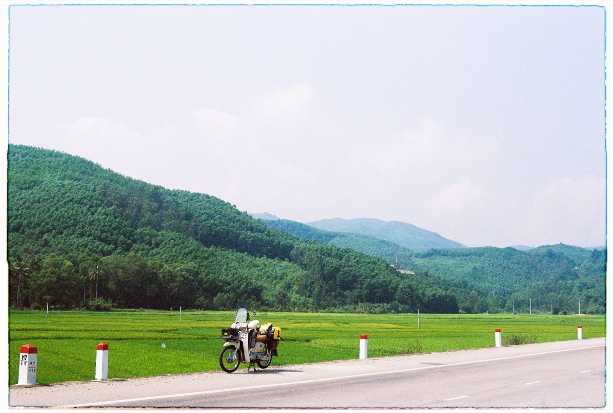

오토바이 타이어 공기압과 펑크: 베트남에서 대처법

공기압이 낮으면 핸들이 무거워지고 타이어 발열과 연료 소모가 늘어납니다. 공기를 너무 넣으면 노면 충격을 잘 흡수하지 못합니다. 모든 모델에 맞는 하나의 숫자는 없습니다: 기준은 설명서나 해당 오토바이의 스티커를 보세요.
얼마나 자주 확인할까
타이어가 차가울 때 최소 1~2주에 한 번, 장거리 전, 구덩이에 세게 부딪힌 뒤에 확인하세요. 발로 눌러보는 것보다 주유소나 정비소의 게이지가 정확합니다.
천천히 새는 펑크의 신호
- 직진을 잘 못 유지한다;
- 핸들이 무겁거나 “떠다니는” 느낌이다;
- 밤새 세워두면 타이어가 눈에 띄게 주저앉는다;
- 같은 바퀴에 계속 공기를 넣어야 한다;
- 못, 찢어진 곳, 손상된 밸브가 보인다.

주행 중 바람이 빠졌다면
급제동하거나 급하게 꺾지 마세요. 스로틀을 부드럽게 풀고, 핸들을 똑바로 잡고, 방향지시등을 켜고 안전한 가장자리로 이동하세요. 동승자가 있다면 먼저 멈춘 뒤 내리게 하세요.
계속 달려도 될까
완전히 바람 빠진 타이어로 계속 달리는 것은 위험합니다: 제어를 잃고 타이어와 림이 손상될 수 있습니다. 정비소가 아주 가까우면 밀고 가는 게 낫습니다. 지도에서 vá xe máy(오토바이 펑크 수리) 또는 sửa xe máy(오토바이 수리)를 검색하세요.
튜브 타이어냐 튜브리스냐
수리 방법은 바퀴 구조와 손상 위치에 따라 다릅니다. 지렁이 수리는 튜브리스 타이어의 적합한 펑크에만 임시 방편이 될 수 있고, 옆면이 찢어졌거나 심하게 손상됐다면 정비사의 판단이 필요하며 교체가 필요한 경우가 많습니다. 무엇이 손상됐는지 묻지 않고 수리에 동의하지 마세요.
타이어를 바꿔야 할 때
균열, 부풀어 오름, 코드가 보임, 심하게 닳은 트레드, 반복되는 펑크 — 아끼지 말아야 할 신호입니다. 수리 후 다음 날 공기압을 다시 확인하세요.
연비와의 관계
공기압이 낮은 타이어는 구름 저항을 높입니다. 연비가 갑자기 나빠졌다면 공기압이 가장 먼저 해볼 간단한 점검 중 하나입니다. 자세히: 50cc 연비 측정법.
요약
차가운 타이어를 정기적으로 확인하고, 내 모델의 수치를 따르고, 펑크가 나면 부드럽게 멈추세요. 완전히 바람 빠진 타이어로 계속 달리지 마세요.